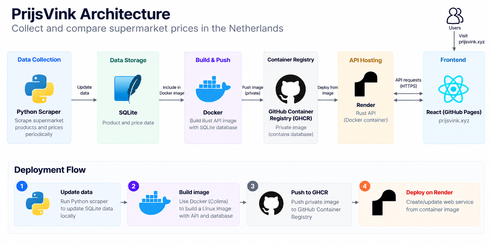

Introduction
I recently built a side project called PrijsVink, which collects and compares supermarket prices across the Netherlands.
The tech stack is fairly simple:
- React for the frontend, hosted on GitHub Pages
- Python for scraping supermarket product information and prices
- Rust (Axum) for the API
- SQLite for storing product and price data
My goal was to keep the architecture as simple as possible. Since this is a personal project, I didn’t want to spend too much time or money maintaining infrastructure.
Initially, I used Cloudflare Tunnel to expose my locally hosted API to the internet. It worked well for development, but there was one obvious limitation: my API was only available when my computer was running and the tunnel was active.
I needed somewhere to host the API without keeping my laptop on all day.
That’s when I came across Render, a cloud platform that supports deploying web services from Docker images.
In this article, I’ll walk through how I deployed my Rust API with SQLite and Docker, why I chose this architecture, and some of the problems I encountered along the way.
Prerequisites
Before getting started, you’ll need:
- GitHub: To store the Docker image using GitHub Container Registry (GHCR)
- Render: To host the API service
- Docker CLI and Colima: To build Docker images locally on macOS
You’ll also need an existing Rust API and a SQLite database file.
Choosing a Deployment Approach
Since my application already used SQLite, I wanted to avoid migrating to MySQL or PostgreSQL just for deployment.
Initially, I considered renting a VPS from DigitalOcean and managing the infrastructure with Terraform.
I’d used Terraform before to deploy several KPI nodes, so this approach was familiar to me. However, it would introduce additional costs and operational overhead.
For a personal project, I didn’t think that was necessary.
Then I discovered Render.
I started wondering: why not package both the SQLite database and Rust API into a single Docker image?
SQLite is an embedded database, so it doesn’t require a separate database server. My production API only needs to read product and price data, which makes this approach particularly suitable.
The architecture is straightforward:

The scraper updates the database separately. I then package a database snapshot into the Docker image and deploy it together with the API.
This approach has several advantages:
- No separate database server to manage
- No persistent disk required for the deployed read-only snapshot
- Predictable deployment artifacts
- Minimal infrastructure costs
Of course, there are trade-offs.
Every time I want to publish updated database content, I need to build and deploy a new image. Changes made to the database inside the running container wouldn’t be durable.
For a read-only API serving periodically updated data, I think that’s a reasonable compromise.
Building Docker Images Without Docker Desktop
One thing that surprised me during this process was that I didn’t need Docker Desktop on my Mac.
I’d used Docker Desktop before and remembered it consuming a noticeable amount of CPU and memory.
This time, I decided to try Colima, which provides a lightweight Linux virtual machine for running containers on macOS.
After installing Colima and the Docker CLI, I could start the container runtime with:
colima startThen I could use familiar Docker commands without installing Docker Desktop.
Since my deployment environment runs Linux containers, I built the image for the linux/amd64 platform:
docker buildx build \
--platform linux/amd64 \
-t ghcr.io/<username>/supershoping-api:latest \
--push .This command builds the image and pushes it directly to GitHub Container Registry.
Building for the correct platform is especially important when developing on an Apple Silicon Mac, where the local architecture may be ARM64.
Packaging SQLite with the Rust API
One of the main decisions was how to handle the SQLite database.
Instead of connecting to an external database service, I included a snapshot of the database in the Docker image.
At runtime, the Rust API opens the database in read-only mode.
This makes the application portable: the same image can run locally or on a compatible container hosting platform.
It also means that each deployment contains a specific version of the application and its data.
There is one important limitation, though. SQLite is stored as a file inside the container, and Render’s container filesystem isn’t suitable for storing persistent application changes.
That’s why I treat the database as an immutable snapshot rather than a writable production database.
If I eventually need real-time database updates, I’ll reconsider this architecture and possibly move to a managed database or persistent storage.
For now, simplicity matters more.
Publishing a Private Docker Image to GitHub
Once the image was ready, the next step was publishing it.
I decided to use GitHub Container Registry (GHCR) because my project was already hosted on GitHub.
First, I authenticated locally using a GitHub token with the required package permissions:
echo "$GHCR_TOKEN" | docker login ghcr.io \
-u <username> \
--password-stdinThen I built and pushed the image using Docker Buildx.
I chose to keep the container image private because it contains the SQLite database snapshot.
Although my API exposes product and price information publicly, I didn’t necessarily want to distribute the entire database file as a downloadable container image.
A private image also requires additional configuration in Render, since the hosting platform needs permission to pull it.
Deploying the Container to Render
The actual deployment process was surprisingly straightforward.
In Render, I created a new Web Service and selected the option to deploy an existing container image.
I provided the GHCR image URL:
ghcr.io/<username>/supershoping-api:latestSince the image was private, I configured registry credentials in Render.
I also configured the environment variables required by my API, including the database location.
After deploying the image, Render started the container and exposed the API through a public HTTPS endpoint.
I then connected my custom domain, api.prijsvink.xyz, to the Render service.
The frontend remained on GitHub Pages, so I didn’t need to change my React hosting setup.
One thing to note is that deploying from a container registry doesn’t automatically guarantee that Render will redeploy whenever a new image is pushed. In my current workflow, I manually trigger the deployment after publishing a new image.
For a side project, this is manageable. In the future, I may automate the process using GitHub Actions and a deployment trigger.
Debugging a SQLite Connection Error
Not everything worked on the first attempt.
After deploying the container, I encountered an error when the API tried to open the SQLite database.
Initially, I used a database URL in a format commonly supported by SQLite clients, but my Rust application uses r2d2_sqlite and rusqlite.
The connection manager expects a filesystem path rather than a SQLx-style connection string.
I updated the configuration to use a regular filesystem path and opened the database in read-only mode:
use rusqlite::OpenFlags;
use r2d2_sqlite::SqliteConnectionManager;
let manager = SqliteConnectionManager::file(database_path)
.with_flags(OpenFlags::SQLITE_OPEN_READ_ONLY);This fixed the connection issue.
It was a useful reminder that even when two Rust libraries work with the same database, their connection configuration formats may differ.
I also learned to verify that the database file actually exists inside the final Docker image, rather than assuming that a successful image build means every runtime dependency is present.
Understanding Render’s Free Tier
Render’s free tier is useful for side projects, but it comes with limitations.
One important behavior is that free web services spin down after approximately 15 minutes without incoming traffic.
When a new request arrives, Render starts the service again. This can introduce a cold start, meaning the first request may take longer than usual.
For now, I’m willing to accept occasional cold starts.
If API response time becomes more important, upgrading the hosting plan would be a more reliable solution.
What I Learned
This project reminded me that deploying an application doesn’t always require a complicated infrastructure setup.
I initially considered a VPS, Terraform, and possibly migrating away from SQLite.
In the end, I deployed my existing Rust API and SQLite database as a single Docker image.
The most useful lessons were:
- Choose infrastructure based on actual requirements. A personal project doesn’t necessarily need a managed database or Kubernetes cluster.
- SQLite can work well in production for read-only workloads. Packaging a database snapshot into a container is a practical option when data updates don’t need to happen inside the deployed service.
- Docker Desktop isn’t required on macOS. Colima provides an alternative for building and running Linux containers.
- Pay attention to library-specific configuration. My SQLite connection error came from using a URL format that didn’t match the Rust database library.
- Understand the limitations of free hosting. Cold starts and manual deployments are acceptable trade-offs for some side projects, but not every production application.
What’s Next?
Next, I’d like to automate Docker builds and deployments using GitHub Actions and explore ways to reduce the Docker image size.
For now, I’m happy with this lightweight setup.
You can check out the project at prijsvink.xyz.